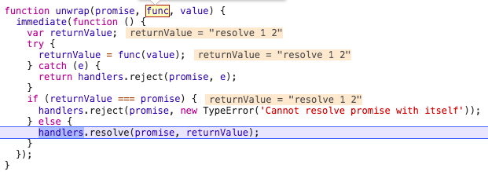
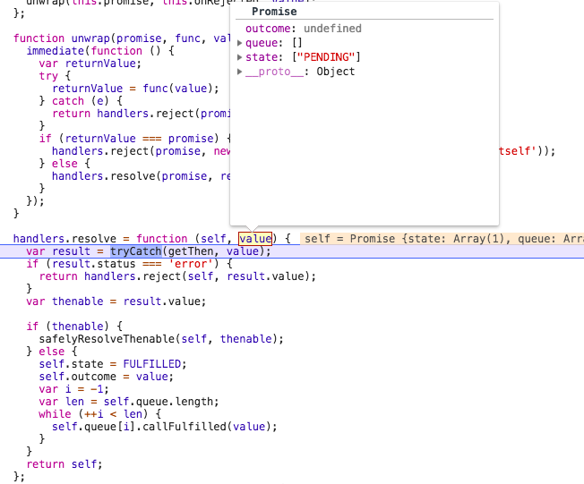

<!DOCTYPE html>


  


<html class="theme-next gemini use-motion" lang="">
<head><meta name="generator" content="Hexo 3.8.0">
  <meta charset="UTF-8">
<meta http-equiv="X-UA-Compatible" content="IE=edge">
<meta name="viewport" content="width=device-width, initial-scale=1, maximum-scale=1">
<meta name="theme-color" content="#222">


<meta http-equiv="Cache-Control" content="no-transform">
<meta http-equiv="Cache-Control" content="no-siteapp">


  
  
  <link href="/lib/fancybox/source/jquery.fancybox.css?v=2.1.5" rel="stylesheet" type="text/css">


<link href="/lib/font-awesome/css/font-awesome.min.css?v=4.6.2" rel="stylesheet" type="text/css">

<link href="/css/main.css?v=5.1.4" rel="stylesheet" type="text/css">


  <link rel="apple-touch-icon" sizes="180x180" href="/images/apple-touch-icon-next.png?v=5.1.4">


  <link rel="icon" type="image/png" sizes="32x32" href="/images/favicon.png?v=5.1.4">


  <link rel="icon" type="image/png" sizes="16x16" href="/images/favicon.png?v=5.1.4">


  <link rel="mask-icon" href="/images/favicon.png?v=5.1.4" color="#222">


  <meta name="keywords" content="js,异步编程,">


<meta name="description" content="本文相关术语见 Promise A+ 规范解析 lie 库的 Promise  异步编程 Promise许多讲 Promise 的文章，喜欢提及 Promise 解决回调地狱的能力。Promise 拥有这能力，本质是它有一个 then 方法，用以访问最终的 reason 或 value 。只有当当前 promise 实例的状态不是 PENDING 时，才会去注册它的 resolve 回调或者 r">
<meta name="keywords" content="js,异步编程">
<meta property="og:type" content="article">
<meta property="og:title" content="Promise 异步队列">
<meta property="og:url" content="http://www.xqyoung.com/2018/11/20/promise-async-then-chain/index.html">
<meta property="og:site_name" content="xqyoung&#39;s blog">
<meta property="og:description" content="本文相关术语见 Promise A+ 规范解析 lie 库的 Promise  异步编程 Promise许多讲 Promise 的文章，喜欢提及 Promise 解决回调地狱的能力。Promise 拥有这能力，本质是它有一个 then 方法，用以访问最终的 reason 或 value 。只有当当前 promise 实例的状态不是 PENDING 时，才会去注册它的 resolve 回调或者 r">
<meta property="og:locale" content="default">
<meta property="og:image" content="http://www.xqyoung.com/2018/11/20/promise-async-then-chain/p1.png">
<meta property="og:image" content="http://www.xqyoung.com/2018/11/20/promise-async-then-chain/p2.png">
<meta property="og:updated_time" content="2018-11-20T04:05:54.879Z">
<meta name="twitter:card" content="summary">
<meta name="twitter:title" content="Promise 异步队列">
<meta name="twitter:description" content="本文相关术语见 Promise A+ 规范解析 lie 库的 Promise  异步编程 Promise许多讲 Promise 的文章，喜欢提及 Promise 解决回调地狱的能力。Promise 拥有这能力，本质是它有一个 then 方法，用以访问最终的 reason 或 value 。只有当当前 promise 实例的状态不是 PENDING 时，才会去注册它的 resolve 回调或者 r">
<meta name="twitter:image" content="http://www.xqyoung.com/2018/11/20/promise-async-then-chain/p1.png">


<script type="text/javascript" id="hexo.configurations">
  var NexT = window.NexT || {};
  var CONFIG = {
    root: '/',
    scheme: 'Gemini',
    version: '5.1.4',
    sidebar: {"position":"left","display":"post","offset":12,"b2t":false,"scrollpercent":false,"onmobile":false},
    fancybox: true,
    tabs: true,
    motion: {"enable":true,"async":false,"transition":{"post_block":"fadeIn","post_header":"slideDownIn","post_body":"slideDownIn","coll_header":"slideLeftIn","sidebar":"slideUpIn"}},
    duoshuo: {
      userId: '0',
      author: 'Author'
    },
    algolia: {
      applicationID: '',
      apiKey: '',
      indexName: '',
      hits: {"per_page":10},
      labels: {"input_placeholder":"Search for Posts","hits_empty":"We didn't find any results for the search: ${query}","hits_stats":"${hits} results found in ${time} ms"}
    }
  };
</script>


  <link rel="canonical" href="http://www.xqyoung.com/2018/11/20/promise-async-then-chain/">


  <title>Promise 异步队列 | xqyoung's blog</title>
  


</head>

<body itemscope="" itemtype="http://schema.org/WebPage" lang="default">

  
  
    
  

  <div class="container sidebar-position-left page-post-detail">
    <div class="headband"></div>

    <header id="header" class="header" itemscope="" itemtype="http://schema.org/WPHeader">
      <div class="header-inner"><div class="site-brand-wrapper">
  <div class="site-meta ">
    

    <div class="custom-logo-site-title">
      <a href="/" class="brand" rel="start">
        <span class="logo-line-before"><i></i></span>
        <span class="site-title">xqyoung's blog</span>
        <span class="logo-line-after"><i></i></span>
      </a>
    </div>
      
        <p class="site-subtitle">前端点滴积累</p>
      
  </div>

  <div class="site-nav-toggle">
    <button>
      <span class="btn-bar"></span>
      <span class="btn-bar"></span>
      <span class="btn-bar"></span>
    </button>
  </div>
</div>

<nav class="site-nav">
  

  
    <ul id="menu" class="menu">
      
        
        <li class="menu-item menu-item-home">
          <a href="/" rel="section">
            
              <i class="menu-item-icon fa fa-fw fa-home"></i> <br>
            
            Home
          </a>
        </li>
      
        
        <li class="menu-item menu-item-tags">
          <a href="/tags/" rel="section">
            
              <i class="menu-item-icon fa fa-fw fa-tags"></i> <br>
            
            Tags
          </a>
        </li>
      
        
        <li class="menu-item menu-item-categories">
          <a href="/categories/" rel="section">
            
              <i class="menu-item-icon fa fa-fw fa-th"></i> <br>
            
            Categories
          </a>
        </li>
      
        
        <li class="menu-item menu-item-archives">
          <a href="/archives/" rel="section">
            
              <i class="menu-item-icon fa fa-fw fa-archive"></i> <br>
            
            Archives
          </a>
        </li>
      

      
    </ul>
  

  
</nav>


 </div>
    </header>

    <main id="main" class="main">
      <div class="main-inner">
        <div class="content-wrap">
          <div id="content" class="content">
            

  <div id="posts" class="posts-expand">
    

  

  
  
  

  <article class="post post-type-normal" itemscope="" itemtype="http://schema.org/Article">
  
  
  
  <div class="post-block">
    <link itemprop="mainEntityOfPage" href="http://www.xqyoung.com/2018/11/20/promise-async-then-chain/">

    <span hidden itemprop="author" itemscope="" itemtype="http://schema.org/Person">
      <meta itemprop="name" content="xqyoung">
      <meta itemprop="description" content="">
      <meta itemprop="image" content="/images/woodstock.jpeg">
    </span>

    <span hidden itemprop="publisher" itemscope="" itemtype="http://schema.org/Organization">
      <meta itemprop="name" content="xqyoung's blog">
    </span>

    
      <header class="post-header">

        
        
          <h1 class="post-title" itemprop="name headline">Promise 异步队列</h1>
        

        <div class="post-meta">
          <span class="post-time">
            
              <span class="post-meta-item-icon">
                <i class="fa fa-calendar-o"></i>
              </span>
              
                <span class="post-meta-item-text">Posted on</span>
              
              <time title="Post created" itemprop="dateCreated datePublished" datetime="2018-11-20T11:59:39+08:00">
                2018-11-20
              </time>
            

            

            
          </span>

          
            <span class="post-category">
            
              <span class="post-meta-divider">|</span>
            
              <span class="post-meta-item-icon">
                <i class="fa fa-folder-o"></i>
              </span>
              
                <span class="post-meta-item-text">In</span>
              
              
                <span itemprop="about" itemscope="" itemtype="http://schema.org/Thing">
                  <a href="/categories/源码解析/" itemprop="url" rel="index">
                    <span itemprop="name">源码解析</span>
                  </a>
                </span>

                
                
              
            </span>
          

          
            
              <span class="post-comments-count">
                <span class="post-meta-divider">|</span>
                <span class="post-meta-item-icon">
                  <i class="fa fa-comment-o"></i>
                </span>
                <a href="/2018/11/20/promise-async-then-chain/#comments" itemprop="discussionUrl">
                  <span class="post-comments-count gitment-comments-count" data-xid="/2018/11/20/promise-async-then-chain/" itemprop="commentsCount"></span>
                </a>
              </span>
            
          

          
          

          

          

          

        </div>
      </header>
    

    
    
    
    <div class="post-body" itemprop="articleBody">

      
      

      
        <blockquote>
<p>本文相关术语见 Promise A+ 规范<br><a href="https://www.xqyoung.com/2018/11/20/promise-lie/">解析 lie 库的 Promise</a></p>
</blockquote>
<h3 id="异步编程-Promise"><a href="#异步编程-Promise" class="headerlink" title="异步编程 Promise"></a>异步编程 Promise</h3><p>许多讲 Promise 的文章，喜欢提及 Promise 解决回调地狱的能力。Promise 拥有这能力，本质是它有一个 then 方法，用以访问最终的 reason 或 value 。只有当当前 promise 实例的状态不是 PENDING 时，才会去注册它的 resolve 回调或者 reject 回调。为确保回调函数会执行，要在新建 Promise 的时候显式调用 resolve 或 reject （或者使用 Promise.resolve() Promise.reject() ）</p>
<p>then 方法中，我们可以做三件事：</p>
<ol>
<li>return 一个同步的值或者是 undefined</li>
<li>return 一个 promise 对象</li>
<li>同步的 throw 一个错误</li>
</ol>
<h4 id="return-一个同步的值或者是-undefined"><a href="#return-一个同步的值或者是-undefined" class="headerlink" title="return 一个同步的值或者是 undefined"></a>return 一个同步的值或者是 undefined</h4><figure class="highlight javascript"><table><tr><td class="gutter"><pre><span class="line">1</span><br><span class="line">2</span><br><span class="line">3</span><br><span class="line">4</span><br><span class="line">5</span><br><span class="line">6</span><br><span class="line">7</span><br><span class="line">8</span><br></pre></td><td class="code"><pre><span class="line"><span class="keyword">var</span> p1 = <span class="keyword">new</span> <span class="built_in">Promise</span>(<span class="function">(<span class="params">resolve</span>) =&gt;</span> &#123;</span><br><span class="line">  resolve(<span class="string">'resolve 1'</span>);</span><br><span class="line">&#125;).then(<span class="function">(<span class="params">v1</span>) =&gt;</span> &#123;</span><br><span class="line">  <span class="built_in">console</span>.log(v1);</span><br><span class="line">  <span class="keyword">return</span> v1 + <span class="string">' 2'</span></span><br><span class="line">&#125;).then(<span class="function">(<span class="params">v2</span>) =&gt;</span> &#123;</span><br><span class="line">  <span class="built_in">console</span>.log(v2)</span><br><span class="line">&#125;)</span><br></pre></td></tr></table></figure>
<p>上面的例子是同步 resolver ，代码走到第一个 <code>.then(...)</code> 的时候，会新建一个 promise 实例，暂且把它搁一边，记为 p2 吧。下一步异步调用回调，这里就是 <code>(v1) =&gt; {...}</code> 这个方法。入参 v1 的值是 p1 的最终 value （p1 已经 resolved）。</p>
<p></p>
<p>在执行 <code>(v1) =&gt; {...}</code> 回调的时候，我们得到一个返回值，它是一个同步的值。由于同步值没什么好操作的，蓝色行其实就是 handler.resolve(p2, v1+ ‘ 2’)，结果我们把 p2 的状态转为 FULFILLED ，把 p2 的 outcome 设为该同步值。</p>
<p>这一步的 return 语句很关键，没有返回值的话，p2 最终的 value 将是 undefined ，那么最后一个 then 方法是无法访问 p2 的 value 的。</p>
<p>关于异步 resolver ，道理也是一样的，牢记 then 里面的回调，只有在 promise 的状态不为 PENDING 的时候才注册。</p>
<h4 id="return-一个-promise-对象"><a href="#return-一个-promise-对象" class="headerlink" title="return 一个 promise 对象"></a>return 一个 promise 对象</h4><p>异步 resolver 可以实现 p2 等待 p1 这种效果</p>
<figure class="highlight javascript"><table><tr><td class="gutter"><pre><span class="line">1</span><br><span class="line">2</span><br><span class="line">3</span><br><span class="line">4</span><br><span class="line">5</span><br><span class="line">6</span><br><span class="line">7</span><br></pre></td><td class="code"><pre><span class="line"><span class="keyword">var</span> p1 = <span class="keyword">new</span> <span class="built_in">Promise</span>(<span class="function">(<span class="params">resolve</span>) =&gt;</span> &#123;</span><br><span class="line">  setTimeout(<span class="function"><span class="params">()</span> =&gt;</span> &#123;</span><br><span class="line">    resolve(<span class="string">'resolve 1'</span>);</span><br><span class="line">  &#125;, <span class="number">2000</span>)</span><br><span class="line">&#125;).then(<span class="function">(<span class="params">value</span>) =&gt;</span> &#123;   <span class="comment">// p2</span></span><br><span class="line">  <span class="built_in">console</span>.log(value);  <span class="comment">// waiting for 2s</span></span><br><span class="line">&#125;);</span><br></pre></td></tr></table></figure>
<p>如果我希望不止 p1 可以异步 resolve，p2 也要延迟 resolve，甚至后面多写几个 <code>.then(...)</code> 这种东西，它们的 resolve 也是异步的，该怎么写？在 then 的回调参数里面没有 resolver 可以用。</p>
<p>仔细想想，p2 之所以不会延迟 resolve ，是因为我们在执行 <code>handlers.resolve(p2, value)</code> 时，我们给它传了一个同步值，p2 直接就获取到这个值。如果我们不在 then 的回调参数里面返回同步值，而是返回一个新的 promise ，这个 promise 就可以做到异步延迟 resolve/reject ，最终会有一个不变的 value 或 reason，那么 p2 的 outcome 是不是就由这个 promise 的表现决定，也具有异步特性呢？</p>
<p>还是看第一个 then 调用的时候发生了什么。前面几步和上一个例子一样，直接看 handler.resolve 这一步</p>
<p></p>
<p>这里参数 value 就是在第一个 then 的回调函数里面返回的 <code>new Promise(...)</code> ，我们判定它是一个 thenable 对象，走 if 分支，即执行  safelyResolveThenable 。</p>
<p>result 的值是 getThen 函数的结果，其实是返回 then 的调用。</p>
<figure class="highlight javascript"><table><tr><td class="gutter"><pre><span class="line">1</span><br><span class="line">2</span><br><span class="line">3</span><br><span class="line">4</span><br><span class="line">5</span><br><span class="line">6</span><br><span class="line">7</span><br><span class="line">8</span><br><span class="line">9</span><br></pre></td><td class="code"><pre><span class="line"><span class="function"><span class="keyword">function</span> <span class="title">getThen</span>(<span class="params">obj</span>) </span>&#123;</span><br><span class="line">  <span class="comment">// Make sure we only access the accessor once as required by the spec</span></span><br><span class="line">  <span class="keyword">var</span> then = obj &amp;&amp; obj.then;</span><br><span class="line">  <span class="keyword">if</span> (obj &amp;&amp; (<span class="keyword">typeof</span> obj === <span class="string">'object'</span> || <span class="keyword">typeof</span> obj === <span class="string">'function'</span>) &amp;&amp; <span class="keyword">typeof</span> then === <span class="string">'function'</span>) &#123;</span><br><span class="line">    <span class="keyword">return</span> <span class="function"><span class="keyword">function</span> <span class="title">applyThen</span>(<span class="params"></span>) </span>&#123;</span><br><span class="line">      then.apply(obj, <span class="built_in">arguments</span>);</span><br><span class="line">    &#125;;</span><br><span class="line">  &#125;</span><br><span class="line">&#125;</span><br></pre></td></tr></table></figure>
<p>我们提取出来的 thenable 其实就是上面的 applyThen ，顾名思义就是 promise.then 的调用。这里的 promise 绑定的是 <code>return new Promise(...)</code> 的那个，我们把它称为 dummy 吧。</p>
<p>这里有一个蛮巧妙的思路，safelyResolveThenable 的时候，self 是 p2，而 thenable 是绑定在 dummy 上的一个 then 的调用。这样讲有点拗口，我们把它看成 <code>dummy.then</code> 就好。所以 p2 的状态和 outcome，将由 dummy 决定，代码拆分如下：</p>
<figure class="highlight javascript"><table><tr><td class="gutter"><pre><span class="line">1</span><br><span class="line">2</span><br><span class="line">3</span><br><span class="line">4</span><br><span class="line">5</span><br><span class="line">6</span><br><span class="line">7</span><br><span class="line">8</span><br><span class="line">9</span><br><span class="line">10</span><br><span class="line">11</span><br><span class="line">12</span><br></pre></td><td class="code"><pre><span class="line"><span class="comment">// 关联 dummy 的状态和 p2 的状态</span></span><br><span class="line"></span><br><span class="line"><span class="keyword">var</span> dummy = <span class="built_in">Promise</span>.resolve(<span class="function">(<span class="params">resolve</span>) =&gt;</span> &#123;</span><br><span class="line">  setTimeout(<span class="function"><span class="params">()</span> =&gt;</span> &#123;</span><br><span class="line">    <span class="built_in">console</span>.log(<span class="string">'sleep 2s'</span>);</span><br><span class="line">    resolve(<span class="string">'resolve 2'</span>);</span><br><span class="line">  &#125;, <span class="number">2000</span>)</span><br><span class="line">&#125;);</span><br><span class="line"></span><br><span class="line"><span class="comment">// 2s 后注册 dummy 的回调</span></span><br><span class="line"><span class="comment">// dummy resolved -&gt; p2 resolved </span></span><br><span class="line"><span class="comment">// dummy.outcome -&gt; p2.outcome</span></span><br></pre></td></tr></table></figure>
<p>p2 的状态转换取决于另一个 promise，这就是异步的关键。</p>
<p>最后再看一下这段代码，里面的 then 回调都是什么时候注册的？</p>
<figure class="highlight javascript"><table><tr><td class="gutter"><pre><span class="line">1</span><br><span class="line">2</span><br><span class="line">3</span><br><span class="line">4</span><br><span class="line">5</span><br><span class="line">6</span><br><span class="line">7</span><br><span class="line">8</span><br><span class="line">9</span><br><span class="line">10</span><br><span class="line">11</span><br><span class="line">12</span><br><span class="line">13</span><br></pre></td><td class="code"><pre><span class="line"><span class="keyword">var</span> p1 = <span class="keyword">new</span> <span class="built_in">Promise</span>(<span class="function">(<span class="params">resolve</span>) =&gt;</span> &#123; <span class="comment">// p1</span></span><br><span class="line">  resolve(<span class="string">'resolve 1'</span>);</span><br><span class="line">&#125;).then(<span class="function">(<span class="params">v1</span>) =&gt;</span> &#123;                   <span class="comment">// p2</span></span><br><span class="line">  <span class="built_in">console</span>.log(v1);</span><br><span class="line">  <span class="keyword">return</span> <span class="keyword">new</span> <span class="built_in">Promise</span>(<span class="function">(<span class="params">resolve</span>) =&gt;</span> &#123; <span class="comment">// dummy</span></span><br><span class="line">    setTimeout(<span class="function"><span class="params">()</span> =&gt;</span> &#123;</span><br><span class="line">      <span class="built_in">console</span>.log(<span class="string">'sleep 2s'</span>);</span><br><span class="line">      resolve(<span class="string">'resolve 2'</span>);</span><br><span class="line">    &#125;, <span class="number">2000</span>)</span><br><span class="line">  &#125;)</span><br><span class="line">&#125;).then(<span class="function">(<span class="params">v2</span>) =&gt;</span> &#123;                   </span><br><span class="line">  <span class="built_in">console</span>.log(v2)</span><br><span class="line">&#125;)</span><br></pre></td></tr></table></figure>
<p>注册顺序：</p>
<p>p1</p>
<p>2s后 dummy resolved，p2 注册回调</p>
<h4 id="基于-promise-的异步队列"><a href="#基于-promise-的异步队列" class="headerlink" title="基于 promise 的异步队列"></a>基于 promise 的异步队列</h4><p>有了上面 then 回调中返回 promise 的技巧，很容易实现一个异步队列。保持一个 promise实例，每次 then 注册的回调都是返回 new Promise，那么靠后的 then 回调的注册依赖前一个 promise 的状态。</p>
<p>比如这个题目：</p>
<p>要求1：按以下要求输出</p>
<figure class="highlight javascript"><table><tr><td class="gutter"><pre><span class="line">1</span><br><span class="line">2</span><br><span class="line">3</span><br><span class="line">4</span><br><span class="line">5</span><br><span class="line">6</span><br><span class="line">7</span><br><span class="line">8</span><br></pre></td><td class="code"><pre><span class="line">human(<span class="string">'Jack'</span>).eat().sleep(<span class="number">5</span>).go().rest(<span class="number">10</span>);</span><br><span class="line"><span class="comment">// I am Jack</span></span><br><span class="line"><span class="comment">// Eat</span></span><br><span class="line"><span class="comment">// 等 5 秒</span></span><br><span class="line"><span class="comment">// Sleep 1s</span></span><br><span class="line"><span class="comment">// Go</span></span><br><span class="line"><span class="comment">// 等 10 秒</span></span><br><span class="line"><span class="comment">// Rest 10s</span></span><br></pre></td></tr></table></figure>
<p>要求2：eat/sleep/go/rest可以改变任意顺序</p>
<figure class="highlight javascript"><table><tr><td class="gutter"><pre><span class="line">1</span><br></pre></td><td class="code"><pre><span class="line">human(<span class="string">'Jack'</span>).sleep(<span class="number">5</span>).eat().rest(<span class="number">10</span>).go();</span><br></pre></td></tr></table></figure>
<p>在每次调用 sleep、rest 这种带有定时的操作的时候，我们希望下一个操作会被阻塞，直到当前的操作执行完毕后，下一个操作才会被执行，这种情况就和上面的 then 回调返回一个异步 resolve 的 promise 的节奏是一样的。</p>
<figure class="highlight javascript"><table><tr><td class="gutter"><pre><span class="line">1</span><br><span class="line">2</span><br><span class="line">3</span><br><span class="line">4</span><br><span class="line">5</span><br><span class="line">6</span><br><span class="line">7</span><br><span class="line">8</span><br><span class="line">9</span><br><span class="line">10</span><br><span class="line">11</span><br><span class="line">12</span><br><span class="line">13</span><br><span class="line">14</span><br><span class="line">15</span><br><span class="line">16</span><br><span class="line">17</span><br><span class="line">18</span><br><span class="line">19</span><br><span class="line">20</span><br><span class="line">21</span><br><span class="line">22</span><br><span class="line">23</span><br><span class="line">24</span><br><span class="line">25</span><br><span class="line">26</span><br><span class="line">27</span><br><span class="line">28</span><br><span class="line">29</span><br><span class="line">30</span><br><span class="line">31</span><br><span class="line">32</span><br><span class="line">33</span><br><span class="line">34</span><br><span class="line">35</span><br><span class="line">36</span><br><span class="line">37</span><br><span class="line">38</span><br><span class="line">39</span><br><span class="line">40</span><br><span class="line">41</span><br><span class="line">42</span><br><span class="line">43</span><br><span class="line">44</span><br><span class="line">45</span><br><span class="line">46</span><br><span class="line">47</span><br><span class="line">48</span><br><span class="line">49</span><br><span class="line">50</span><br><span class="line">51</span><br><span class="line">52</span><br><span class="line">53</span><br><span class="line">54</span><br><span class="line">55</span><br><span class="line">56</span><br><span class="line">57</span><br></pre></td><td class="code"><pre><span class="line"><span class="function"><span class="keyword">function</span> <span class="title">Human</span>(<span class="params">name</span>) </span>&#123;</span><br><span class="line">  <span class="keyword">this</span>.name = name;</span><br><span class="line">  <span class="keyword">this</span>.greeting();</span><br><span class="line">  <span class="keyword">this</span>.queue = <span class="built_in">Promise</span>.resolve();</span><br><span class="line">&#125;</span><br><span class="line"></span><br><span class="line"><span class="function"><span class="keyword">function</span> <span class="title">human</span>(<span class="params">name</span>) </span>&#123;</span><br><span class="line">  <span class="keyword">return</span> <span class="keyword">new</span> Human(name);</span><br><span class="line">&#125;</span><br><span class="line"></span><br><span class="line">Human.prototype.greeting = <span class="function"><span class="keyword">function</span> (<span class="params"></span>) </span>&#123;</span><br><span class="line">  <span class="built_in">console</span>.log(<span class="string">`I am <span class="subst">$&#123;<span class="keyword">this</span>.name&#125;</span>`</span>);</span><br><span class="line">&#125;</span><br><span class="line"></span><br><span class="line">Human.prototype.eat = <span class="function"><span class="keyword">function</span>(<span class="params"></span>) </span>&#123;</span><br><span class="line">  <span class="keyword">this</span>.queue = <span class="keyword">this</span>.queue.then(<span class="function"><span class="params">()</span> =&gt;</span> &#123;</span><br><span class="line">    <span class="keyword">return</span> <span class="keyword">new</span> <span class="built_in">Promise</span>(<span class="function">(<span class="params">resolve</span>) =&gt;</span> &#123;</span><br><span class="line">      <span class="built_in">console</span>.log(<span class="string">'Eat'</span>);</span><br><span class="line">      resolve();</span><br><span class="line">    &#125;)</span><br><span class="line">  &#125;);</span><br><span class="line">  <span class="keyword">return</span> <span class="keyword">this</span>;</span><br><span class="line">&#125;</span><br><span class="line"></span><br><span class="line">Human.prototype.go = <span class="function"><span class="keyword">function</span>(<span class="params"></span>) </span>&#123;</span><br><span class="line">  <span class="keyword">this</span>.queue = <span class="keyword">this</span>.queue.then(<span class="function"><span class="params">()</span> =&gt;</span> &#123;</span><br><span class="line">    <span class="keyword">return</span> <span class="keyword">new</span> <span class="built_in">Promise</span>(<span class="function">(<span class="params">resolve</span>) =&gt;</span> &#123;</span><br><span class="line">      <span class="built_in">console</span>.log(<span class="string">'Go'</span>);</span><br><span class="line">      resolve();</span><br><span class="line">    &#125;)</span><br><span class="line">  &#125;);</span><br><span class="line">  <span class="keyword">return</span> <span class="keyword">this</span>;</span><br><span class="line">&#125;</span><br><span class="line"></span><br><span class="line">Human.prototype.sleep = <span class="function"><span class="keyword">function</span>(<span class="params">sec</span>) </span>&#123;</span><br><span class="line">  <span class="keyword">this</span>.queue = <span class="keyword">this</span>.queue.then(<span class="function"><span class="params">()</span> =&gt;</span> &#123;</span><br><span class="line">    <span class="keyword">return</span> <span class="keyword">new</span> <span class="built_in">Promise</span>(<span class="function">(<span class="params">resolve</span>) =&gt;</span> &#123;</span><br><span class="line">      setTimeout(<span class="function"><span class="params">()</span> =&gt;</span> &#123;</span><br><span class="line">        <span class="built_in">console</span>.log(<span class="string">`Sleep <span class="subst">$&#123;sec&#125;</span>s`</span>);</span><br><span class="line">        resolve();</span><br><span class="line">      &#125;, sec * <span class="number">1000</span>);</span><br><span class="line">    &#125;)</span><br><span class="line">  &#125;);</span><br><span class="line">  <span class="keyword">return</span> <span class="keyword">this</span>;</span><br><span class="line">&#125;</span><br><span class="line"></span><br><span class="line">Human.prototype.rest = <span class="function"><span class="keyword">function</span>(<span class="params">sec</span>) </span>&#123;</span><br><span class="line">  <span class="keyword">this</span>.queue = <span class="keyword">this</span>.queue.then(<span class="function"><span class="params">()</span> =&gt;</span> &#123;</span><br><span class="line">    <span class="keyword">return</span> <span class="keyword">new</span> <span class="built_in">Promise</span>(<span class="function">(<span class="params">resolve</span>) =&gt;</span> &#123;</span><br><span class="line">      setTimeout(<span class="function"><span class="params">()</span> =&gt;</span> &#123;</span><br><span class="line">        <span class="built_in">console</span>.log(<span class="string">`Rest <span class="subst">$&#123;sec&#125;</span>s`</span>);</span><br><span class="line">        resolve();</span><br><span class="line">      &#125;, sec * <span class="number">1000</span>);</span><br><span class="line">    &#125;)</span><br><span class="line">  &#125;);</span><br><span class="line">  <span class="keyword">return</span> <span class="keyword">this</span>;</span><br><span class="line">&#125;</span><br></pre></td></tr></table></figure>
<h3 id="Promise-工厂"><a href="#Promise-工厂" class="headerlink" title="Promise 工厂"></a>Promise 工厂</h3><p>本段选自 <a href="https://pouchdb.com/2015/05/18/we-have-a-problem-with-promises.html" target="_blank" rel="noopener">We have a problem with promises</a>，有删改。</p>
<p>假如你要一个接一个地执行一系列 promise ，类似 <code>Promise.all()</code> 的功能，但是不是并行的，你可能一时天真写下这样的代码：</p>
<figure class="highlight javascript"><table><tr><td class="gutter"><pre><span class="line">1</span><br><span class="line">2</span><br><span class="line">3</span><br><span class="line">4</span><br><span class="line">5</span><br><span class="line">6</span><br><span class="line">7</span><br></pre></td><td class="code"><pre><span class="line"><span class="function"><span class="keyword">function</span> <span class="title">executeSequentially</span>(<span class="params">promises</span>) </span>&#123;</span><br><span class="line">  <span class="keyword">var</span> result = <span class="built_in">Promise</span>.resolve();</span><br><span class="line">  promises.forEach(<span class="function"><span class="keyword">function</span> (<span class="params">promise</span>) </span>&#123;</span><br><span class="line">    result = result.then(promise);</span><br><span class="line">  &#125;);</span><br><span class="line">  <span class="keyword">return</span> result;</span><br><span class="line">&#125;</span><br></pre></td></tr></table></figure>
<p>但是结果并非预期，传入 <code>executeSequentially()</code> 的一系列 promises 会并行执行。原因是你不应当在 promises 这个数组层级上操作，对每一个 promise 而言，一旦被创建，它就要开始执行了，这里你需要的是一个 promise 工厂：只有在调用的时候才创建 promise 对象。</p>
<figure class="highlight javascript"><table><tr><td class="gutter"><pre><span class="line">1</span><br><span class="line">2</span><br><span class="line">3</span><br><span class="line">4</span><br><span class="line">5</span><br><span class="line">6</span><br><span class="line">7</span><br></pre></td><td class="code"><pre><span class="line"><span class="function"><span class="keyword">function</span> <span class="title">executeSequentially</span>(<span class="params">promiseFactories</span>) </span>&#123;</span><br><span class="line">  <span class="keyword">var</span> result = <span class="built_in">Promise</span>.resolve();</span><br><span class="line">  promiseFactories.forEach(<span class="function"><span class="keyword">function</span> (<span class="params">promiseFactory</span>) </span>&#123;</span><br><span class="line">    result = result.then(promiseFactory);</span><br><span class="line">  &#125;);</span><br><span class="line">  <span class="keyword">return</span> result;</span><br><span class="line">&#125;</span><br></pre></td></tr></table></figure>
<p>promise 工厂是一个很简单的函数，它返回一个 promise 。</p>
<figure class="highlight javascript"><table><tr><td class="gutter"><pre><span class="line">1</span><br><span class="line">2</span><br><span class="line">3</span><br></pre></td><td class="code"><pre><span class="line"><span class="function"><span class="keyword">function</span> <span class="title">myPromiseFactory</span>(<span class="params"></span>) </span>&#123;</span><br><span class="line">  <span class="keyword">return</span> somethingThatCreatesAPromise();</span><br><span class="line">&#125;</span><br></pre></td></tr></table></figure>
<p>事实上我们拆开 <code>result = result.then(promiseFactory)</code> 的壳子，它其实就是 <code>Promise.resolve().then(promiseFactory[0]).then(promiseFactory[1]).then(...)</code> ，promiseFactory 是什么？是一个返回 promise 的函数。所以这种方式和上边的[基于 promise 的异步队列]，是一样的。</p>
<p>来看一个题目：</p>
<figure class="highlight javascript"><table><tr><td class="gutter"><pre><span class="line">1</span><br><span class="line">2</span><br><span class="line">3</span><br><span class="line">4</span><br><span class="line">5</span><br><span class="line">6</span><br><span class="line">7</span><br><span class="line">8</span><br><span class="line">9</span><br><span class="line">10</span><br><span class="line">11</span><br><span class="line">12</span><br><span class="line">13</span><br><span class="line">14</span><br><span class="line">15</span><br><span class="line">16</span><br><span class="line">17</span><br><span class="line">18</span><br><span class="line">19</span><br><span class="line">20</span><br><span class="line">21</span><br><span class="line">22</span><br><span class="line">23</span><br><span class="line">24</span><br><span class="line">25</span><br><span class="line">26</span><br><span class="line">27</span><br><span class="line">28</span><br><span class="line">29</span><br><span class="line">30</span><br><span class="line">31</span><br><span class="line">32</span><br><span class="line">33</span><br><span class="line">34</span><br><span class="line">35</span><br><span class="line">36</span><br><span class="line">37</span><br><span class="line">38</span><br><span class="line">39</span><br><span class="line">40</span><br><span class="line">41</span><br></pre></td><td class="code"><pre><span class="line"><span class="comment">//实现mergePromise函数，把传进去的数组顺序先后执行，</span></span><br><span class="line"><span class="comment">//并且把返回的数据先后放到数组data中</span></span><br><span class="line"></span><br><span class="line"><span class="keyword">const</span> timeout = <span class="function"><span class="params">ms</span> =&gt;</span> <span class="keyword">new</span> <span class="built_in">Promise</span>(<span class="function">(<span class="params">resolve, reject</span>) =&gt;</span> &#123;</span><br><span class="line">    setTimeout(<span class="function"><span class="params">()</span> =&gt;</span> &#123;</span><br><span class="line">        resolve();</span><br><span class="line">    &#125;, ms);</span><br><span class="line">&#125;);</span><br><span class="line"></span><br><span class="line"><span class="keyword">const</span> ajax1 = <span class="function"><span class="params">()</span> =&gt;</span> timeout(<span class="number">2000</span>).then(<span class="function"><span class="params">()</span> =&gt;</span> &#123;</span><br><span class="line">    <span class="built_in">console</span>.log(<span class="string">'1'</span>);</span><br><span class="line">    <span class="keyword">return</span> <span class="number">1</span>;</span><br><span class="line">&#125;);</span><br><span class="line"></span><br><span class="line"><span class="keyword">const</span> ajax2 = <span class="function"><span class="params">()</span> =&gt;</span> timeout(<span class="number">1000</span>).then(<span class="function"><span class="params">()</span> =&gt;</span> &#123;</span><br><span class="line">    <span class="built_in">console</span>.log(<span class="string">'2'</span>);</span><br><span class="line">    <span class="keyword">return</span> <span class="number">2</span>;</span><br><span class="line">&#125;);</span><br><span class="line"></span><br><span class="line"><span class="keyword">const</span> ajax3 = <span class="function"><span class="params">()</span> =&gt;</span> timeout(<span class="number">2000</span>).then(<span class="function"><span class="params">()</span> =&gt;</span> &#123;</span><br><span class="line">    <span class="built_in">console</span>.log(<span class="string">'3'</span>);</span><br><span class="line">    <span class="keyword">return</span> <span class="number">3</span>;</span><br><span class="line">&#125;);</span><br><span class="line"></span><br><span class="line"></span><br><span class="line"></span><br><span class="line"><span class="function"><span class="keyword">function</span> <span class="title">mergePromise</span>(<span class="params">ajaxArray</span>) </span>&#123;</span><br><span class="line"><span class="comment">//todo 补全函数</span></span><br><span class="line">&#125;</span><br><span class="line"></span><br><span class="line">mergePromise([ajax1, ajax2, ajax3]).then(<span class="function"><span class="params">data</span> =&gt;</span> &#123;</span><br><span class="line">    <span class="built_in">console</span>.log(<span class="string">'done'</span>);</span><br><span class="line">    <span class="built_in">console</span>.log(data); <span class="comment">// data 为 [1, 2, 3]</span></span><br><span class="line">&#125;);</span><br><span class="line"></span><br><span class="line"><span class="comment">// 分别输出</span></span><br><span class="line"><span class="comment">// 1</span></span><br><span class="line"><span class="comment">// 2</span></span><br><span class="line"><span class="comment">// 3</span></span><br><span class="line"><span class="comment">// done</span></span><br><span class="line"><span class="comment">// [1, 2, 3]</span></span><br></pre></td></tr></table></figure>
<p>其实题目中已经写好了 promise 工厂，ajax1，ajax2，ajax3 每一个都是创建 promise 的工厂——它们的返回值都是一个 <code>new Promise(...)</code> 的操作，所以把 <code>return ajax1()</code> 写在 then 的回调函数里面就好。</p>
<figure class="highlight javascript"><table><tr><td class="gutter"><pre><span class="line">1</span><br><span class="line">2</span><br><span class="line">3</span><br><span class="line">4</span><br><span class="line">5</span><br><span class="line">6</span><br><span class="line">7</span><br><span class="line">8</span><br><span class="line">9</span><br><span class="line">10</span><br><span class="line">11</span><br><span class="line">12</span><br><span class="line">13</span><br><span class="line">14</span><br><span class="line">15</span><br><span class="line">16</span><br><span class="line">17</span><br><span class="line">18</span><br><span class="line">19</span><br><span class="line">20</span><br><span class="line">21</span><br><span class="line">22</span><br><span class="line">23</span><br><span class="line">24</span><br><span class="line">25</span><br></pre></td><td class="code"><pre><span class="line"><span class="function"><span class="keyword">function</span> <span class="title">mergePromise</span>(<span class="params">ajaxArray</span>) </span>&#123;</span><br><span class="line">  <span class="keyword">let</span> result = [];</span><br><span class="line">  <span class="keyword">let</span> p = <span class="built_in">Promise</span>.resolve();</span><br><span class="line">  ajaxArray.forEach(<span class="function">(<span class="params">ajax</span>) =&gt;</span> &#123;</span><br><span class="line">    p = p.then(<span class="function"><span class="params">()</span> =&gt;</span> &#123;</span><br><span class="line">      <span class="keyword">return</span> ajax().then(<span class="function">(<span class="params">data</span>) =&gt;</span> &#123;</span><br><span class="line">        <span class="keyword">if</span> (data) &#123;</span><br><span class="line">          result.push(data)</span><br><span class="line">        &#125;</span><br><span class="line">      &#125;)</span><br><span class="line">    &#125;)</span><br><span class="line">  &#125;);</span><br><span class="line">  <span class="keyword">return</span> p.then(<span class="function"><span class="params">()</span> =&gt;</span> &#123;</span><br><span class="line">    <span class="keyword">return</span> result;</span><br><span class="line">  &#125;)</span><br><span class="line">&#125;</span><br><span class="line"></span><br><span class="line"></span><br><span class="line"><span class="comment">// 或者</span></span><br><span class="line"></span><br><span class="line">ajaxArray.forEach(<span class="function">(<span class="params">ajax</span>) =&gt;</span> &#123;</span><br><span class="line">  p = p.then(ajax).then(<span class="function">(<span class="params">data</span>) =&gt;</span> &#123;</span><br><span class="line">    result.push(data)</span><br><span class="line">  &#125;)</span><br><span class="line">&#125;);</span><br></pre></td></tr></table></figure>
<blockquote>
<p>参考文章</p>
<p><a href="http://efe.baidu.com/blog/promises-anti-pattern/" target="_blank" rel="noopener">谈谈使用 promise 时候的一些反模式</a></p>
<p><a href="https://pouchdb.com/2015/05/18/we-have-a-problem-with-promises.html" target="_blank" rel="noopener">We have a problem with promises</a></p>
</blockquote>

      
    </div>
    
    
    

    

    

    

    <footer class="post-footer">
      
        <div class="post-tags">
          
            <a href="/tags/js/" rel="tag"># js</a>
          
            <a href="/tags/异步编程/" rel="tag"># 异步编程</a>
          
        </div>
      

      
      
      

      
        <div class="post-nav">
          <div class="post-nav-next post-nav-item">
            
              <a href="/2018/11/20/promise-lie/" rel="next" title="解析 Lie 库 Promise 源码">
                <i class="fa fa-chevron-left"></i> 解析 Lie 库 Promise 源码
              </a>
            
          </div>

          <span class="post-nav-divider"></span>

          <div class="post-nav-prev post-nav-item">
            
              <a href="/2018/11/20/async-await-and-promise/" rel="prev" title="async/await 异步队列 vs Promise 异步队列">
                async/await 异步队列 vs Promise 异步队列 <i class="fa fa-chevron-right"></i>
              </a>
            
          </div>
        </div>
      

      
      
    </footer>
  </div>
  
  
  
  </article>


    <div class="post-spread">
      
    </div>
  </div>


          </div>
          


          

  
    <div class="comments" id="comments">
      
        <div id="gitment-container"></div>
      
    </div>

  


        </div>
        
          
  
  <div class="sidebar-toggle">
    <div class="sidebar-toggle-line-wrap">
      <span class="sidebar-toggle-line sidebar-toggle-line-first"></span>
      <span class="sidebar-toggle-line sidebar-toggle-line-middle"></span>
      <span class="sidebar-toggle-line sidebar-toggle-line-last"></span>
    </div>
  </div>

  <aside id="sidebar" class="sidebar">
    
    <div class="sidebar-inner">

      

      
        <ul class="sidebar-nav motion-element">
          <li class="sidebar-nav-toc sidebar-nav-active" data-target="post-toc-wrap">
            Table of Contents
          </li>
          <li class="sidebar-nav-overview" data-target="site-overview-wrap">
            Overview
          </li>
        </ul>
      

      <section class="site-overview-wrap sidebar-panel">
        <div class="site-overview">
          <div class="site-author motion-element" itemprop="author" itemscope="" itemtype="http://schema.org/Person">
            
              
            
              <p class="site-author-name" itemprop="name">xqyoung</p>
              <p class="site-description motion-element" itemprop="description">forever young</p>
          </div>

          <nav class="site-state motion-element">

            
              <div class="site-state-item site-state-posts">
              
                <a href="/archives/">
              
                  <span class="site-state-item-count">20</span>
                  <span class="site-state-item-name">posts</span>
                </a>
              </div>
            

            
              
              
              <div class="site-state-item site-state-categories">
                <a href="/categories/index.html">
                  <span class="site-state-item-count">10</span>
                  <span class="site-state-item-name">categories</span>
                </a>
              </div>
            

            
              
              
              <div class="site-state-item site-state-tags">
                <a href="/tags/index.html">
                  <span class="site-state-item-count">15</span>
                  <span class="site-state-item-name">tags</span>
                </a>
              </div>
            

          </nav>

          

          
            <div class="links-of-author motion-element">
                
                  <span class="links-of-author-item">
                    <a href="https://github.com/sheepig" target="_blank" title="GitHub">
                      
                        <i class="fa fa-fw fa-github"></i>GitHub</a>
                  </span>
                
                  <span class="links-of-author-item">
                    <a href="mailto:xqy.young@gmail.com" target="_blank" title="E-Mail">
                      
                        <i class="fa fa-fw fa-envelope"></i>E-Mail</a>
                  </span>
                
            </div>
          

          
          

          
          

          

        </div>
      </section>

      
      <!--noindex-->
        <section class="post-toc-wrap motion-element sidebar-panel sidebar-panel-active">
          <div class="post-toc">

            
              
            

            
              <div class="post-toc-content"><ol class="nav"><li class="nav-item nav-level-3"><a class="nav-link" href="#异步编程-Promise"><span class="nav-number">1.</span> <span class="nav-text">异步编程 Promise</span></a><ol class="nav-child"><li class="nav-item nav-level-4"><a class="nav-link" href="#return-一个同步的值或者是-undefined"><span class="nav-number">1.1.</span> <span class="nav-text">return 一个同步的值或者是 undefined</span></a></li><li class="nav-item nav-level-4"><a class="nav-link" href="#return-一个-promise-对象"><span class="nav-number">1.2.</span> <span class="nav-text">return 一个 promise 对象</span></a></li><li class="nav-item nav-level-4"><a class="nav-link" href="#基于-promise-的异步队列"><span class="nav-number">1.3.</span> <span class="nav-text">基于 promise 的异步队列</span></a></li></ol></li><li class="nav-item nav-level-3"><a class="nav-link" href="#Promise-工厂"><span class="nav-number">2.</span> <span class="nav-text">Promise 工厂</span></a></li></ol></div>
            

          </div>
        </section>
      <!--/noindex-->
      

      

    </div>
  </aside>


        
      </div>
    </main>

    <footer id="footer" class="footer">
      <div class="footer-inner">
        <div class="copyright">&copy; <span itemprop="copyrightYear">2018</span>
  <span class="with-love">
    <i class="fa fa-user"></i>
  </span>
  <span class="author" itemprop="copyrightHolder">xqyoung</span>

  
</div>


  <div class="powered-by">Powered by <a class="theme-link" target="_blank" href="https://hexo.io">Hexo</a></div>


  <span class="post-meta-divider">|</span>


  <div class="theme-info">Theme &mdash; <a class="theme-link" target="_blank" href="https://github.com/iissnan/hexo-theme-next">NexT.Gemini</a> v5.1.4</div>


        


        
      </div>
    </footer>

    
      <div class="back-to-top">
        <i class="fa fa-arrow-up"></i>
        
      </div>
    

    

  </div>

  

<script type="text/javascript">
  if (Object.prototype.toString.call(window.Promise) !== '[object Function]') {
    window.Promise = null;
  }
</script>


  


  
  
    <script type="text/javascript" src="/lib/jquery/index.js?v=2.1.3"></script>
  

  
  
    <script type="text/javascript" src="/lib/fastclick/lib/fastclick.min.js?v=1.0.6"></script>
  

  
  
    <script type="text/javascript" src="/lib/jquery_lazyload/jquery.lazyload.js?v=1.9.7"></script>
  

  
  
    <script type="text/javascript" src="/lib/velocity/velocity.min.js?v=1.2.1"></script>
  

  
  
    <script type="text/javascript" src="/lib/velocity/velocity.ui.min.js?v=1.2.1"></script>
  

  
  
    <script type="text/javascript" src="/lib/fancybox/source/jquery.fancybox.pack.js?v=2.1.5"></script>
  


  


  <script type="text/javascript" src="/js/src/utils.js?v=5.1.4"></script>

  <script type="text/javascript" src="/js/src/motion.js?v=5.1.4"></script>


  
  


  <script type="text/javascript" src="/js/src/affix.js?v=5.1.4"></script>

  <script type="text/javascript" src="/js/src/schemes/pisces.js?v=5.1.4"></script>


  
  <script type="text/javascript" src="/js/src/scrollspy.js?v=5.1.4"></script>
<script type="text/javascript" src="/js/src/post-details.js?v=5.1.4"></script>


  


  <script type="text/javascript" src="/js/src/bootstrap.js?v=5.1.4"></script>


  


  


	


  


  


<!-- LOCAL: You can save these files to your site and update links -->
    
        
        <link rel="stylesheet" href="https://www.wenjunjiang.win/css/gitment.css">
        <script src="https://www.wenjunjiang.win/js/gitment.js"></script>
    
<!-- END LOCAL -->

    

    
      <script type="text/javascript">
      function renderGitment(){
        var gitment = new Gitmint({
            id: window.location.pathname,
            owner: 'sheepig',
            repo: 'gitment-blog',
            
            lang: "" || navigator.language || navigator.systemLanguage || navigator.userLanguage,
            
            oauth: {
            
            
                client_secret: '141626c9ca2f813e26a402c7610d70a0a7e18fd2',
            
                client_id: '0e7bd7f1f653adfc8ad5'
            }});
        gitment.render('gitment-container');
      }

      
      renderGitment();
      
      </script>
    


  


  

  

  

  
  

  

  

  

</body>
</html>
